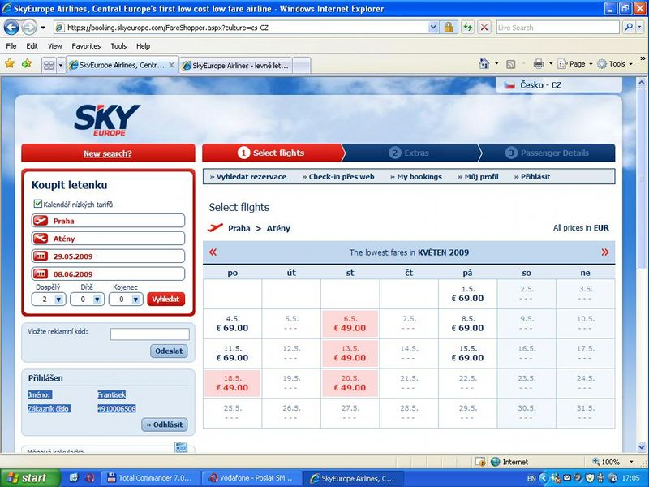
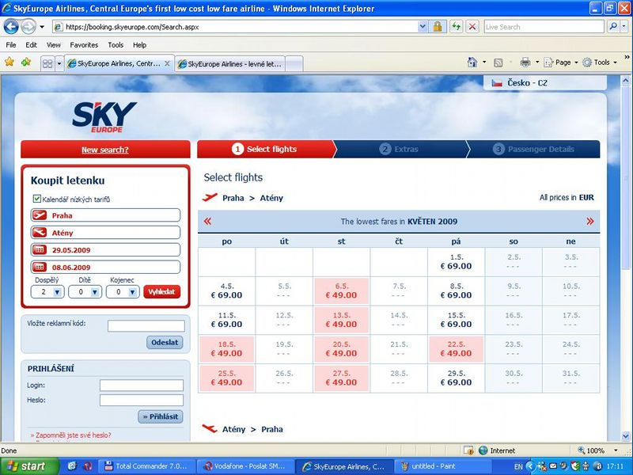

Narazil jsem na podivnou chybu rezervačního rozhraní letecké společnosti SkyEurope. Nebo to není chyba?
Stalo se mi to dvakrát po sobě, ale až napodruhé jsem si toho všimnul. Bohužel příliš pozdě. S přítelkyní jsme vždy u ní vybírali datum letu na prázdninový výlet podle kalendáře na skyeurope.com. Platím kartou a proto jsem chtěl počkat s rezervací až domů, protože můj počítač je jediný, kterému věřím. Když jsem přijel let už byl vyprodán. Říkal jsem si "Mám to ale pech," ale protože nás tlačil čas, po telefonu jsme si domluvili termín náhradní, který jsem pak koupil.
O několik dní později mi přítelkyně volá, že let je na stránkách stále zobrazen jako dostupný. Zkontroluju to, a vidím, že není! Po chvilce dohadování vyšlo najevo, že v kalendáři na mém počítači chybí asi čtvrtina letů. Začal jsem zkoumat, čím to je.
Po vyzkoušení na dvou počítačích a třech prohlížečích jsem zjistil, že jediná příčina je v tom, že jsem přihlášený. Obrázek za tisíc slov:


Tolik tedy podstata problému. Pokud se vám zdá, že máte v nabídce málo letů, zkuste se odhlásit...
Reakce SkyEurope je kapitolou sama pro sebe. Volal jsem na rezervační linku (ještě před vyzkoušením na různých prohlížečích) a problém popisoval a dožadoval se přeložení na původní termín (zdarma). Po několika otázkách na můj počítač slečna vítězoslavně prohlásila, že to je tím, že používám prohlížeč Opera. Supěl jsem, ale formálně proti tomu nelze nic říct - říkal jsem si, že pravděpodobně mají někde na stránkách napsáno "jen explorer". Šel jsem to ze zvědavosti zkusit.
Nejen, že to fungovalo úplně stejně, ale na stránkách je napsáno, že Opera je plně podporována od verze 8. Volal jsem znovu na rezervační linku a vše znovu vysvětlil. Slečna se šla poradit se svými nadřízenými a když se vrátila, řekla rozhodně, že tato situace nemůže nastat, tedy jí reklamovat nemůžu. A jestli bych jim mohl poslat screenshot na mail. Zeptal jsem se "A proč bych to dělal, když se na mě stejně vykašlete?" a slečna začala trochu méně rozhodně vysvětlovat, že tím pomůžu ostatním zákazníkům.
Vzhledem k tomu, že celou dobu vyjadřovala pochybnosti o mé důvěryhodnosti, natočil jsem si celý proces na video (vložením na youtube se to dost rozmazalo, ale původní záznam je celkem čitelný):
Screenshoty (byly příliš velké, takže jen odkazy odkazy na ně) i video jsem pak přece jen poslal na mail SkyEurope. První vtipný moment byl, když mě požádali, abych obrázky zmenšil a poslal v mailu, protože nemají přístup k internetu. U následné žádosti, zda bych nemohl zkonvertovat i to video, jsem se vyloženě bavil. Druhý den přišla odpověď:
Dane video som preposlala kompetentnym osobam, aby mali moznost si ho prezriet. Kazdopadne skusili sme rezervaciu daneho letu ako s prihlasenim, tak bez prihlasenia.
A v dalším mailu:
Podla danych obrazkov Vam to ako prihlasenemu akurat vyznacuje menej dni. Skuste zvolit neskorsi let, alebo prekliknut na dalsiu stranku.
Slečna zásadní chybě v uživatelském rozhraní říká "akurát" a radí mi vybírat si dřívější nebo pozdější lety. U tohohle už se dá jenom brečet. Nevím, jestli je to nějaká obchodní taktika, ale mozek mi to nebere. Co by člověk chtěl za ty peníze, že.